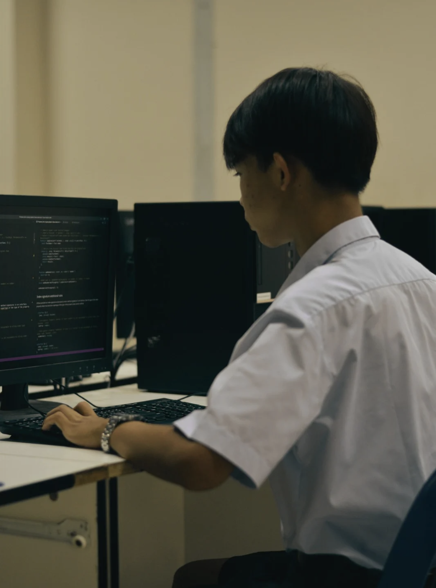

PORTFOLIO BY THANAKORN PRADABWET
HOME
statement of purpose
Profile
Education
Transcript
Activities
Certificate

ข้อมูลส่วนตัว
ชื่อ: นาย ธนกร ประดับเวช
ชื่อเล่น: กร
เกิด : 5 กุมภาพันธ์ 2550
อายุ : 17 ปี
สัญชาติ : ไทย
เชื้อชาติ : ไทย
แผนการเรียน : แผนวิทย์-คณิต
ความสามารพิเศษ
เขียนโปรแกรมจากภาษา Html และ css
เล่นดนตรีสากล (กลองสแนร์ , กลองใหญ่ , กลองทรีโอ)
เล่นดนตรีไทย (เครื่องหนังทุกชนิด)
เรียนรู้เร็ว ถนัดออกแบบ วางแผน
งานอดิเรก
ฝึกเขียนโปรแกรม
เล่นดนตรี
อ่านหนังสือ
ฟังเพลง
ข้อมูลติดต่อ
โทร : 081-183-8283
อีเมล : chadow.korn1@gmail.com
ที่อยู่ : 19 หมู่ 7 ต.หนองสองห้อง อ.บ้านแพ้ว จ.สมุทรสาคร
fackbook : Thanakorn Pradabwet
มหาวิทยาลัยเกษตรศาสตร์ คณะวิศวกรรมศาสตร์ สาขาวิชาวิศวกรรมคอมพิวเตอร์